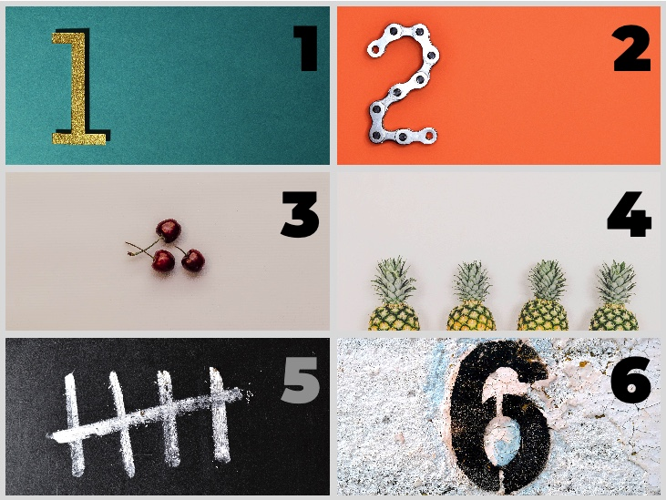

Pour cet exercice, vous allez utiliser le principe d'une boucle SASS pour générer l'image d'arrière-plan de 6 différents sélecteurs css.
Aper√ßu du r√©sultat‚ÄØüëá
Médias
for en SCSS afin qu'il y ait 6 itérations.
Dans cette boucle, générez le sélecteur .sect-X où X équivaut à l'index de la boucle.
Changez la propriété background-image afin qu'elle affiche l'image imgX.jpg où X équivaut à l'index de la boucle.
Boucle SASS
Plusieurs classes CSS similaires avec une légère variation